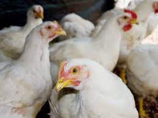
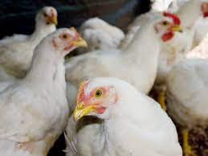
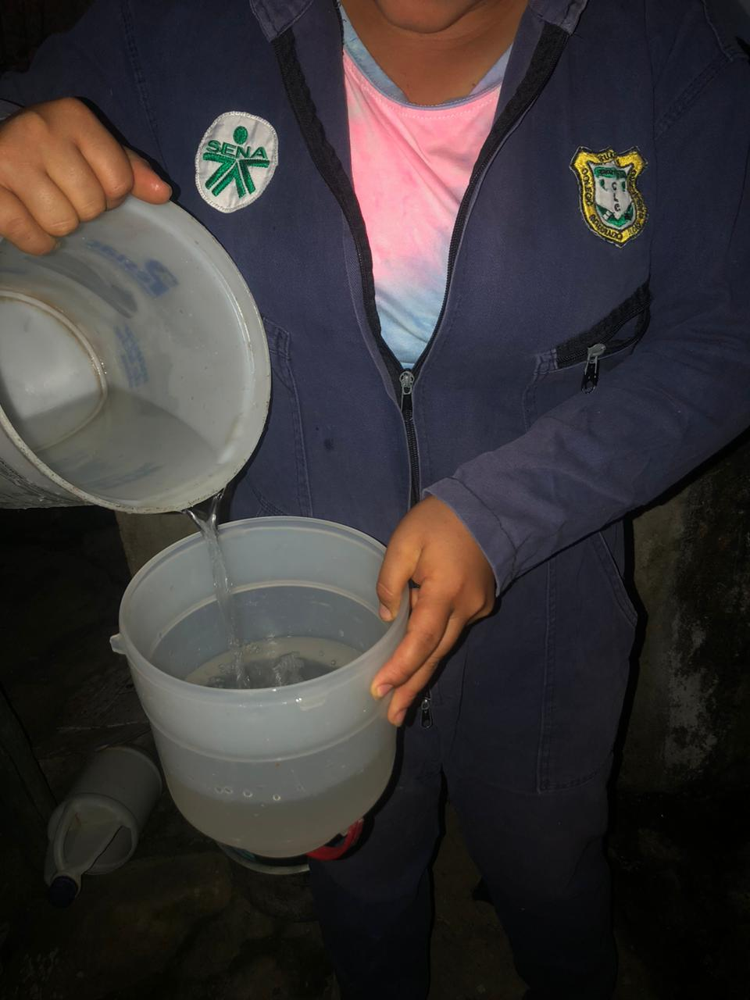
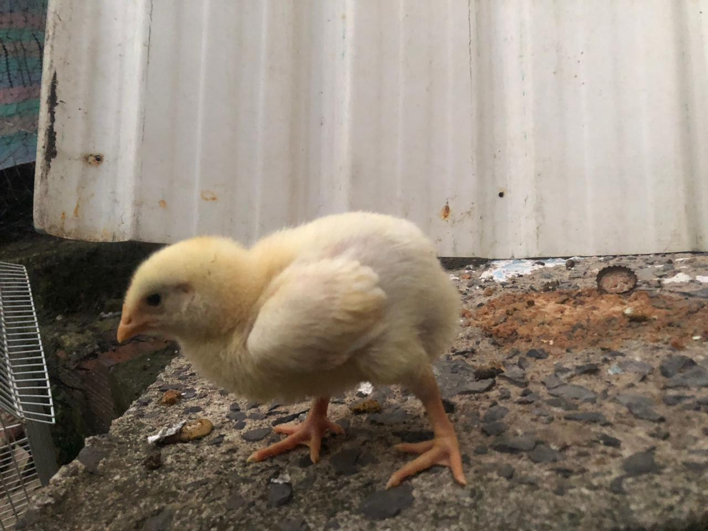
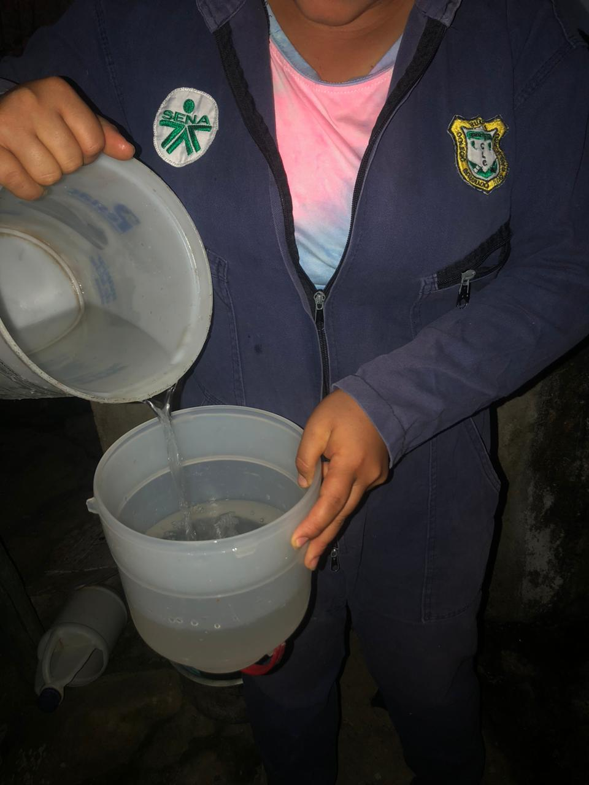
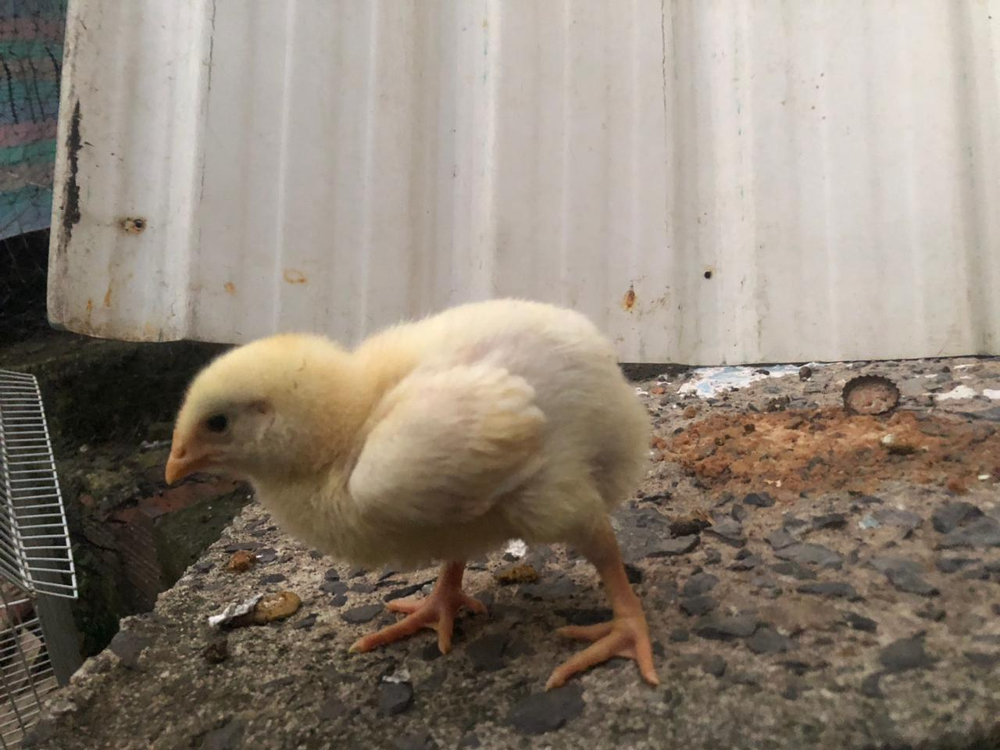
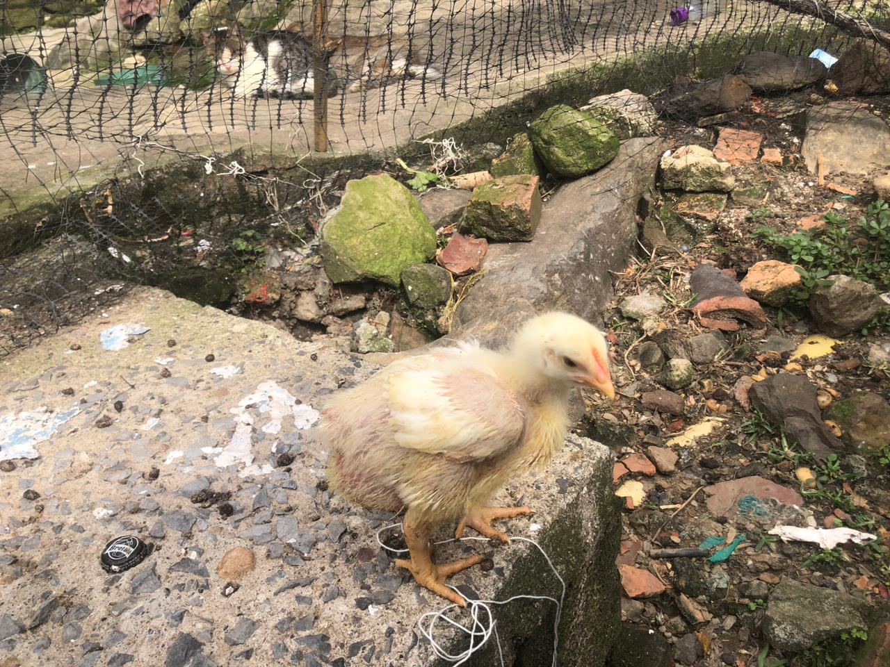
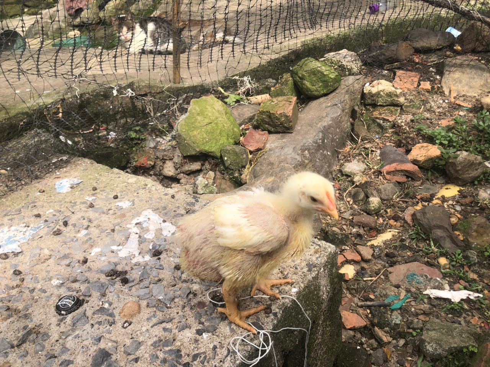
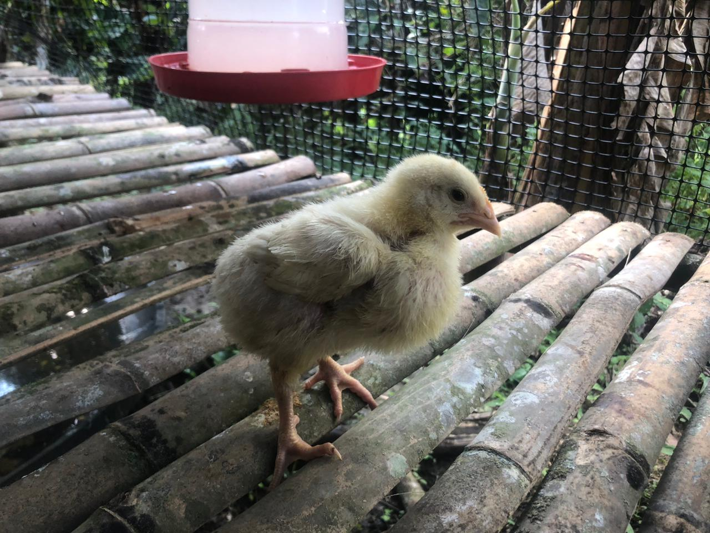
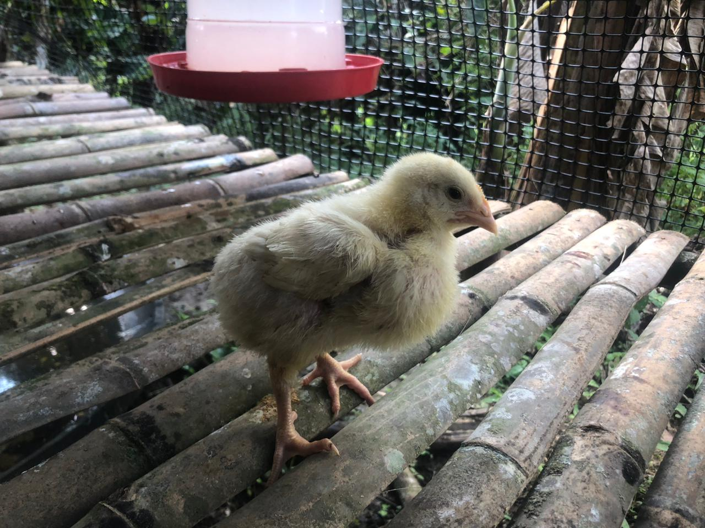

Cría y Comercialización de Carne de Pollo Semicriollo
Se debe inspirar amor para el trabajo y enseñar a trabajar.
Autora Angela Patricia López Calderón
El presente trabajo es el resultado del manejo técnico en la cría y comercialización de carne de pollo de la línea Ross Ap que fue desarrollado en la vereda Gad del municipio de Suaita Santander para este cumplimiento se implementaron prácticas de manejo tanto en alimentación convencional como suplementaria al igual que con el agua que se les maneja una suplementación de una bomba calórica para minimizar costos de producción sobre la sostenibilidad de los mismo.
Por otra parte, se realizó un registro en cuanto a ganancia de peso teniendo en cuenta la cantidad de alimentación suministrada diariamente ya que se tiene estipulado un proceso de control de ganancia de peso para tener en cuenta la rentabilidad y la sostenibilidad de la totalidad de la producción.
De igual forma se lograra controlar de una manera muy eficiente el consumo y suministros utilizados durante la producción del producto hasta obtener la comercialización del mismo para realizar un desarrollo de resultados evidenciando si es rentable la producción de pollos semicriollo manejando dietas suplementarias ya que estas buscan optimizar un 30 % de alimento convencional aportando diferentes componentes nutricionales como energía fibra proteína entre otros que ayudan al desarrollo más viable de la producción y creando un mejoramiento en el plan de alimentación en cuanto al costo total de este suministro diario.
Asimismo, la comercialización de este producto busca tener en cuenta los parámetros y costos obtenidos durante la cría de los pollos para determinar los costos de producción de cada animal, rendimiento en cuanto a ganancias de peso y consumo de alimento logrando un empalme de la taza actual de precios del mercado con los resultados obtenidos de la producción.
Finalmente se realizará el análisis de mercadeo en cuanto a venta porcentaje de gastos, porcentajes de gastos durante la cría para finalmente trazas la taza de ganancias obtenidas de la totalidad de producción. A lo largo del proyecto, se controla el peso semanal de los pollos y se administra una alimentación balanceada tres veces al día. El objetivo principal es producir carne de pollo de alta calidad para satisfacer la demanda del mercado local.
 



 



 


 
